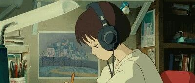

新手入门级剪辑，10分钟就能学会！
点击关注 秋秋很开心

文：@秋秋
图：@秋秋
哈喽，大家好，我是秋秋。从心理学跨行编导，剪辑也是我学习的一部分。
所以，今天就出一个入门级、新手包会的剪辑教程。有流量的的可直接看视频👇
REC

剪辑之前☕️
因为剪辑也是一个比较复杂的过程，所以我打算分为两个部分。
第一部分呢就是教会大家导入，剪辑，字幕，加音乐、音效，做背景和导出。
这个部分学完，你就可以完整的剪出一个还不错的视频了！

第二部分呢就是做特效，学一些比较出彩的剪辑。比如常见的插件应用，转场、分屏、放大、调色处理，还有建立蒙版、扣像等，适合进阶版。
那么现在，就开始基础剪辑吧！
00
初识软件
首先打开你的剪辑软件，然后我是用的这个软件，就是 fcpx 剪辑。

如果还没有装剪辑软件的可以后台回复「安装包」即可。
打开一共分为4个面板。最大的一块区域就是控制面板，所有的素材都要拿到这里进行操作。

左上角是放视频、音频和字幕的地方。中间实时预览视频，右面是对视频颜色、字幕字体、声音等调整的地方。
两个小箭头为隐匿区，这节课先不讲（上面是调速、视频大小等，下面是转场特效地方）
也许你还不熟悉每一个地方，多点几次其实就好了。
00
导入新建
现在是不是忍不住要开始剪辑了。剪辑的第一步是新建项目。在素材区——点击空白——选择新建项目。

大小尺寸如图片所示，速率25帧即可。
建好后直接选择command ➕I导入视频。

导入窗口出现右面的选项可以暂时不管，但是视频要复制到资源库，导入之后就开始新世界的大门了。
这时候选中你新建好的项目，拖拉已经导入的视频到操作面板就可以了。
01
开始剪辑

拖入好视频后，剪辑才真正开始。之所以剪辑有趣，一样的视频剪辑出来千差万别，也是从这一步开始了。
之所以叫剪辑视频，就是说素材不是每一个都必须的，我们要开始删除自己不想要的素材。
1.对于你不想要的大块素材，直接选中delete删除。
2.想保留中间但是不要两端，鼠标直接放在两端前后拖拽即可👆
3.只想要一段视频中几个不连贯片段，就用两个快捷键，A和B。快捷键A选中，B切割。


切割成几个小块后，A再选中不要的，直接删除。
刚开始剪辑会不舍得删除素材，记住自己想要什么效果，按照最初的脚本或者理想效果去剪；
推荐先写好脚本再去拍视频，这样可以有效减少剪辑时挑素材和裁剪的时间。
几个回合下来，视频就都是你想要的片段了。
这时候就开始调整视频顺序。对于一些视频可以放大缩小，让视觉上有点变化。
完成这一步视频剪辑就完成了。别小看这一步，真的很重要也费时间哦！

02
添加音乐

视频拼接完成后，我会选择加入音乐。因为音乐选的好🎵，视频也就成功一半了。

添加方式非常简单，直接网易云XX下载，然后拖拽进来就可以。之所以这一步这么简单还拿出来单独讲，是因为图片、音效、包括特效、转场，都是这个方法。
所有素材的插入方式，都是下载好，拖拽！
加入音乐视频顿时有了味道，视频里可以体会一下🙈
03
添加字幕

到了📒比较重要的环节了，其实视频拼贴好加个音乐字幕也就能看了。所以加字幕是非常关键的一步。
字幕的添加方式是素材区—文字—基础字幕。

字幕调整在右面的编辑区。拖拽进来后，所有的字体、颜色、边框、大小、位置都在这里。
☝️一个好的字体也是成功的关键，如果你电脑没有很多字体，回复【 字 体 】就 行。

那种一直得吧得说话的，也是直接拖拽字幕进来，建议是拉长和视频一样大，然后 B 切割成一块一块，再去改内容。
04
添加音效

前面说到，剪辑好加上字幕音乐视频就差不多了。其实如果你不是技术流，只是拍点小剧情上传抖音。
这 样 就 够 了
但是如果是想做的更好一点，更大的发挥这个软件剪辑的功效 , 或者是看起来精致一点，就接着看吧。

音效添加很简单，FCPX自带许多音效，位置就在素材区，字幕添加的旁边。
我早就说过这个软件好处就是自带许多插件，你平时可以多点点，绝对不吃亏。
05
添加背景

这一招就比较进阶了，也是目前很流行的Vlog的剪辑方式，其实很简单就是素材区—发生器—单色。
然后将背景拖入你想要的位置，为了让背景看得见，一定要调整视频的大小。

做好之后就是上面这个样子，是不是视频顿时不一样，就美观很多～
06
修改导出

其实这个视频到这就结束了，除了加字幕音乐，你还可以加点音效和背景让视频更加丰富有趣。
再总结一下：

没啥问题了，就导出，文件—共享—1080P 即可。这里需要注意⚠️，因为每个平台上传标准不一样，所以导出的时候最好去看一下平台规定。
这个清晰度在抖音上还是很高清的，B站也不错。

导出后下载里面搜文件名就可以；
想传手机千万别用微信；
想要小尺寸又高清的导出用compress
剪辑之后☕️
入门级视频剪辑教程就到这里了！随着现在APP和短视频流行，剪辑真的是人人都需要学习的工具～
但是，这不意味着你就要学到多高深的剪辑技巧。只要你有想法，剪辑真的真的只是一个工具💡
所以赶快尝试起来吧！
另外，需要的物料比如好看的字体、音效，直接公众号后台回复【素材包】，就能领取了～

一 个 能 学 东 西 的 公 众 号
HAVE A NICE DAY
☕️
♦️ 有 帮 助 的 ♦️

合 作 联 系：cinleung@163.com